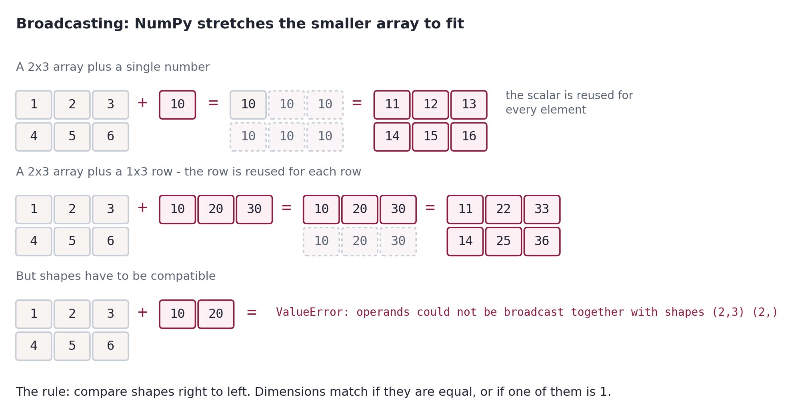
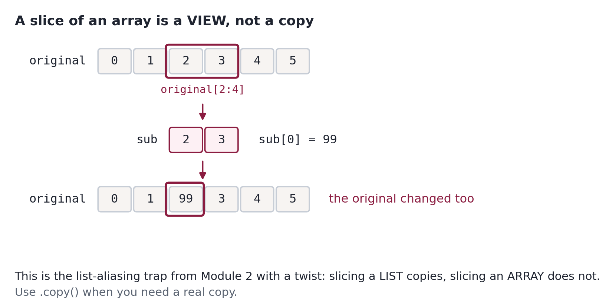
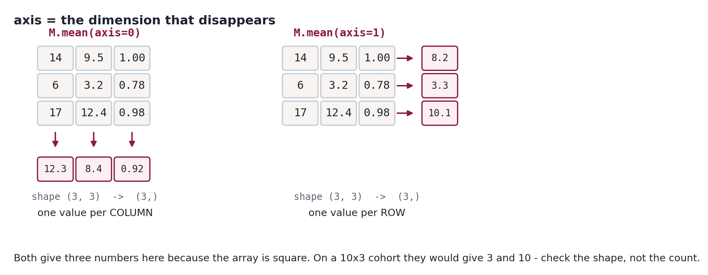

Learn how NumPy replaces slow Python loops with fast, vectorized array operations. The foundation of scientific Python - and the engine that powers pandas, scikit-learn, and virtually every other data science library.
You delivered the schema report. The six tables are loaded, the missing value is flagged, and the Cabinet has stopped asking whether the data exists.
Now they want numbers.
"Good work on the inventory. Next question is harder. The Cabinet wants a single measure of how engaged a student is - something that combines logins, time on task, and submission rate into one number we can actually compare across students. Build me an engagement index.And do it in a way that still works when I hand you eighty thousand rows instead of ten." - A. Lee
That last sentence is the whole module.
Everything you built in Module 2 works. It also would not survive real data. Your mean-GPA loop ran ten times; on the full cohort it runs eighty thousand times, and the analysis Lee actually wants runs it repeatedly. NumPy is how Python does numerical work at a scale where loops stop being an option.
By the end you will have computed a real engagement index across the cohort, using vectorized operations, and checked it for data-quality problems before reporting it. That is Stage 3 of the capstone, done for real.
import numpy as np
print(f"NumPy {np.__version__} ready.")
output
NumPy 2.2.6 ready.
import numpy as np is not optional styling. Essentially every NumPy example you will ever read online uses np, and code that spells it out in full reads as unfamiliar to anyone else on a team. Same for pd in Module 4 and plt in Module 5.
Sources and acknowledgments
**Python for Data Analysis, by Wes McKinney.** Free online, and the primary source for this module. The section ordering, the ndarray-first framing, and much of the treatment of data types, indexing, and np.where follow McKinney. He wrote pandas, so his account of NumPy is written by someone who then had to build on it. Licensed CC BY-NC-SA 4.0, the same terms as Downey.
**Python Data Science Handbook, by Jake VanderPlas. Chapter 2 is the standard NumPy reference and shaped which topics we treat as essential. Its text is CC BY-NC-ND**, so nothing here reproduces it; the overlap is topic selection, written fresh.
**Think Python, by Allen Downey.** Carried over from Module 2 for the %%expect convention and the make-errors-on-purpose philosophy.
Original to Eastern. The Lee commission and the engagement index, the cohort data, the diagrams, the Predict/Run/Debrief convention, the Eastern football examples, and the connective tissue to the capstone.
A note on the football data
Some examples use real Eastern University Eagles statistics, and some use the Institutional Research cohort from Module 2. Both are deliberate: the football data is concrete and fun to reason about, and the cohort is what the capstone needs. The cohort numbers are synthetic, as always.
The vocabulary
Module 2's vocabulary still applies. These are the new terms, and NumPy error messages use all of them. Two do most of the work: vectorization is applying an operation to a whole array at once instead of looping, and broadcasting is the rule that lets arrays of different shapes work together.
array (ndarray) - NumPy's grid of values, all of one type, of a fixed size. The object every other NumPy idea is about.
shape - A tuple giving the length of each dimension. (10,) is ten values in a row; (2, 4) is two rows of four.
dimension - One axis of an array. A column of numbers is one-dimensional; a table is two.
axis - The direction an operation runs along. axis=0 collapses down the rows, axis=1 across the columns.
dtype - The single type shared by every element of an array. One string in the data makes the whole array text.
element-wise - Applied to each value independently. a + b adds the first to the first, the second to the second.
vectorization - Expressing a whole-array operation without a Python loop, so the work happens in compiled code.
broadcasting - The rule that lets arrays of different shapes work together by stretching the smaller one, without copying it.
view - An array that shares memory with another. Changing the view changes the original - slicing gives you a view.
copy - An independent array with its own memory. .copy() when you need the original left alone.
mask - A boolean array used to select values. scores[scores > 70] keeps the positions where the mask is True.
aggregate - Reducing many values to fewer - sum, mean, std, max. The shape gets smaller.
Why NumPy exists
Before any syntax, the demonstration. This is the argument for the entire module, and it takes about thirty seconds to run.
Here is a pure-Python function that computes reciprocals - 1/x for every value in a collection. It's an accumulator loop, exactly like the ones you wrote in Module 2.
defcompute_reciprocals(values):
"""Return 1/x for each value, the pure Python way."""
output = []
for value in values:
output.append(1.0 / value)
return output
small = np.array([4, 9, 2, 7, 1])
print(compute_reciprocals(small))
Correct. Now scale it up. We'll build the same 200,000 values twice - once as an ordinary Python list, once as a NumPy array - because which one you loop over turns out to matter.
rng = np.random.default_rng(0)
big_array = rng.integers(1, 100, size=200_000)
big_list = [int(v) for v in big_array] # the same numbers, as plain Python intsprint(big_list[:8])
print(big_array[:8])
output
[85, 64, 51, 27, 31, 5, 8, 2]
[8564512731582]
Predict before you read on
Predict. How much faster do you think 1.0 / big_array will be than looping over big_list - twice? Ten times? A hundred? Commit to an answer before you run the next cell.
%timeit normally just prints. The -o flag makes it return the result instead, so we can do arithmetic on the timings rather than eyeballing them. -q keeps it quiet while it measures.
We time three things: the loop over a plain Python list, the loop over the NumPy array, and the vectorized version. The third comparison is the interesting one, and it is not the one you would expect.
loop over big_list 8.65 ms
loop over big_array 215.16 ms
vectorized 0.105 ms
Two things to notice, and the second one is the surprise.
The vectorized version is enormously faster than the loop. Two orders of magnitude, from code that is also shorter. That is the difference between an analysis that runs while you read the question and one that runs while you go get coffee. On Lee's eighty thousand rows, across the dozen metrics the Cabinet will eventually ask for, it is the difference between a working pipeline and an abandoned one.
But looping over the array was far slower than looping over the list - same numbers, same function, same arithmetic. That is not a typo in your output, and it means the speedup you quote depends on which loop you compare against.
Let the notebook compute the ratios rather than taking anyone's word for them:
fair = t_list.average / t_vector.average
inflated = t_array.average / t_vector.average
tax = t_array.average / t_list.average
print(f"vectorized vs. looping a LIST {fair:8.0f}x <- the fair claim")
print(f"vectorized vs. looping an ARRAY {inflated:8.0f}x <- the flattering claim")
print(f"cost of looping an array at all {tax:8.1f}x slower")
output
vectorized vs. looping a LIST 82x <- the fair claim
vectorized vs. looping an ARRAY 2041x <- the flattering claim
cost of looping an array at all 24.9x slower
Predict before you read on
Predict. Why would iterating a NumPy array in Python be slower than iterating a plain Python list holding the very same numbers? Commit to an answer before you run the next cell.
What happened
The reason is unboxing.
NumPy stores its numbers in a compact C format, not as Python objects. Every time a Python loop pulls one out, NumPy has to manufacture a Python object to hand over - and then throw it away on the next iteration. Two hundred thousand values means two hundred thousand pointless object creations, on top of the loop overhead the list version already pays.
Now look at those two speedup numbers again. Both are real measurements of real code. Only one is a fair comparison, because the larger figure is measuring vectorization plus a self-inflicted penalty that has nothing to do with vectorization.
The honest claim is the smaller one: vectorizing is worth roughly two orders of magnitude. That is more than enough to matter. Quoting the bigger number would be the numerical equivalent of the cherry-picked correlation you were warned about in Module 2 - technically true, and chosen because it flatters.
Takeaway
Never loop over a NumPy array in Python. If you must loop, loop over a list. If you can vectorize, do that instead and the question disappears.
And when you see a benchmark, ask what the baseline was. A speedup figure is a ratio, and ratios can be inflated by making the denominator worse rather than the numerator better. Usually that is someone benchmarking the thing that was convenient rather than the thing that was fair.
Why the gap is so large
Python is a flexible language, and flexibility costs. Every time that loop touches an element, Python has to check what type it is, look up the right division routine, allocate a new object for the result, and add it to a growing list. A million values means a million rounds of that overhead.
NumPy stores its data in one solid block of memory, all of one type, and hands the arithmetic to compiled C code that loops without any of the per-element checking. You pay the flexibility cost once, when you build the array, instead of on every operation.
That is also why an array cannot hold mixed types, which will look like a limitation in section 3 and is actually the whole trick.
The name for what you just did is vectorization: expressing an operation on a whole array rather than on individual elements. It's shorter to write, and the speed comes free.
# The same operation, three ways. Read them and notice which one you'd# rather debug six months from now.
values = np.array([4, 9, 2, 7, 1])
loop_result = compute_reciprocals(values) # explicit loop
comp_result = [1.0 / v for v in values] # list comprehension
vect_result = 1.0 / values # vectorizedprint(loop_result)
print(comp_result)
print(vect_result)
The middle one is a list comprehension - the compact way to write a loop that builds a list. You'll see it constantly in Python code, and it's worth being able to read:
[1.0 / v for v in values]
# ^expression ^the loop you already know
It is shorter than the loop and exactly as slow, because it is still a loop. Section 1 of Module 2 promised you'd meet comprehensions here rather than there, and this is why: next to vectorization, the comparison actually means something.
Takeaway
Reach for a vectorized NumPy operation before a loop, every time. If you find yourself writing for over an array, stop and ask whether NumPy already has the operation - it usually does, and it will be both shorter and dramatically faster.
The exception worth knowing: loops are fine when the work per iteration is large (reading files, calling an API). Vectorization pays off when the per-element work is small and the element count is huge, which is exactly the shape of most data analysis.
Your turn
Time these two ways of summing a million numbers. Predict which wins and by roughly how much, then measure.
L = list(range(1_000_000))
A = np.arange(1_000_000)
Use %timeit sum(L) and %timeit A.sum(). Then predict where %timeit sum(A) will land - summing the array with Python's built-in sum - before you run it.
Show a worked solution
L = list(range(1_000_000))
A = np.arange(1_000_000)
print("Python sum on a list:")
%timeit sum(L)
print("NumPy sum on an array:")
%timeit A.sum()
print("Python sum on an array (the worst of both):")
%timeit sum(A)
Takeaway
sum(A) is the slowest of the three, and by now you know why: Python's per-element loop overhead plus the unboxing tax from the footnote above. It is the worst of both worlds, and it looks perfectly reasonable on the page.
The rule: use NumPy's own methods on NumPy arrays.A.sum(), not sum(A). When a NumPy operation feels slow, the first thing to check is whether a Python loop has crept in somewhere.
Note the output: array([21, 30, ...]), not [21, 30, ...]. NumPy tells you what type of thing you're looking at, and once you're juggling lists and arrays in the same notebook you will be glad it does.
That's a season of Eastern Eagles scoring. A two-dimensional array holds two seasons - a list of lists:
Unchanged. points_per_game / 4 computed a new array and handed it back; nothing was stored.
This is the single most common NumPy mistake among students, and it's the same lesson as .strip() in Module 2: the operation returns a result, and if you want to keep it you must assign it.
per_quarter = points_per_game / 4# keeps the result
points_per_game / 4# computes it and throws it away
Building arrays without typing the values
Real arrays are rarely typed by hand. NumPy has constructors for the common shapes, and you'll use them constantly for placeholders and test data.
print(np.zeros(5)) # five zerosprint(np.ones(4)) # four onesprint(np.full(4, 7.5)) # four copies of 7.5
output
[0. 0. 0. 0. 0.]
[1. 1. 1. 1.]
[7.57.57.57.5]
Give a tuple for a multi-dimensional shape. Rows first, always:
np.linspace is the one people forget and then love. Give it a start, a stop, and how many values you want, and it spaces them evenly. Note that unlike arange, the stop is included.
print(np.linspace(0, 1, 5)) # 5 values from 0 to 1 inclusiveprint(np.linspace(0, 100, 11))
arange when you know the step. linspace when you know how many values you want. Reaching for arange with a fractional step and counting the results by hand is a sign you wanted linspace.
There is a correctness reason too. arange with a fractional step accumulates floating-point error as it goes, so the element count can come out one off from what you expect. linspace computes the endpoints and divides, so you always get exactly the number of values you asked for.
# arange with a fractional step: how many values do you get?print(len(np.arange(0, 1, 0.1))) # 10, as expectedprint(len(np.arange(0, 0.3, 0.1))) # ...also fineprint(np.arange(0, 0.3, 0.1)) # but look at the last valueprint(len(np.linspace(0, 0.3, 4))) # linspace: exactly what you asked for
output
103
[0. 0.10.2]
4
A few more you'll meet, mostly in linear algebra contexts:
print(np.eye(3)) # identity matrixprint()
print(np.empty(3)) # uninitialized - whatever was in memory
output
[[1. 0. 0.]
[0. 1. 0.]
[0. 0. 1.]]
[1. 1. 1.]
np.empty does not fill anything in, so its contents are arbitrary leftover memory. It's marginally faster than zeros and a reliable source of confusion. Use zeros unless you have measured a reason not to.
Your turn
Lee wants a quick scaffold for a report.
Make an array of the integers 0 through 100 counting by 5.
Make a 3-by-4 array of zeros.
Make an array of exactly 7 evenly spaced values between 0 and 1.
Make an array of ten 0.5s in two different ways.
Show a worked solution
print(np.arange(0, 101, 5))
print()
print(np.zeros((3, 4)))
print()
print(np.linspace(0, 1, 7))
print()
print(np.full(10, 0.5)) # the direct wayprint(np.ones(10) * 0.5) # the broadcasting way - section 4
Shape, size, and dtype
Before you can debug an array operation you have to be able to describe the array. Four attributes do almost all of it.
Let's load the part of the cohort this module is about. Same ten students as Module 2, same numbers - now as arrays.
# ===========================================================================# DTSC 520 -- Institutional Research cohort, LMS engagement (n = 10)# SYNTHETIC DATA. Ten students drawn from the capstone cohort, so every# number here reappears in the capstone extract.# ===========================================================================
student_ids = np.array([1002, 1003, 1024, 1026, 1032, 1044, 1050, 1063, 1069, 1089])
names = np.array([
"Elliot Park", "Amara Okonkwo", "Priya Raghunathan",
"Jian-Wei Chen", "Sofia Marchetti", "Marcus Webb",
"Tobias Lindqvist", "Rosalind Achebe", "Nadia Haddad",
"Devin Castellanos"
])
hs_clubs = np.array([1, 2, 3, 4, 2, 2, 1, 1, 2, 0])
internships = np.array([0, 0, 2, 1, 0, 1, 0, 1, 1, 0])
logins = np.array([0.8, 3.4, 4.4, 3.4, 3.2, np.nan, 0.4, 3.3, 3.8, 0.4])
hours = np.array([2.5, 1.8, 6.6, 4.3, 2.4, np.nan, 1.1, 3.5, 4.4, 1.7])
submission = np.array([0.69, 0.84, 0.99, 0.74, 0.84, np.nan, 0.68, 0.75, 0.94, 0.7])
ug_gpa = np.array([2.48, 3.02, 2.8, 2.81, 2.67, 2.6, 2.13, 2.96, 3.4, 1.99])
hs_gpa = np.array([2.2, 2.72, 3.44, 2.79, 2.35, 2.5, 1.89, 2.69, 2.55, 1.91])
# Marcus Webb (1044) has no LMS record for this term.# In Module 2 that hole was None. In NumPy it becomes np.nan - section 12.
grad_gpa = np.array([2.86, 3.4, 3.18, 3.19, 3.05, np.nan, 2.38, 3.34, 3.78, 2.37])
print(f"{len(student_ids)} students loaded.")
output
10 students loaded.
Now the four attributes. Note that none of them are called with parentheses - they're values, not methods:
shape is a tuple, which is why a one-dimensional array reports (10,) with the trailing comma - Module 2, section 8. On a 2D array all four get more interesting:
When a NumPy operation surprises you, print the shape first. Not the values - the shape. The overwhelming majority of NumPy confusion is a shape you assumed rather than checked, and .shape answers it in one line.
This is the NumPy version of Module 2's advice to check type() when an AttributeError shows up.
dtype: one type for the whole array
A Python list can hold anything. An array holds one type, recorded in its dtype, and that restriction is what makes the whole thing fast.
float64, and look closely at the values: 1. and 2. have gained decimal points.
NumPy upcast the integers to floats, because a float can represent an integer without loss but not the reverse. It picks the type that holds everything, silently.
Silently is the important word. Nothing warned you that your integer counts are now floats.
<U21 means "Unicode string, up to 21 characters." The numbers became text. Arithmetic on this array now fails, or worse, does something you did not intend.
very_mixed * 2
What happens when you run this?
This cell is meant to fail. Read the error rather than avoiding it.
output
Traceback (most recent call last):
File "<expected to fail>", line 1, in <module>
TypeError: The 'out' kwarg is necessary. Use numpy.strings.multiply without it.
Takeaway
A dtype of <U... on an array you expected to be numeric means something non-numeric got in. In real data that is almost always a stray 'N/A', '--', or an empty string in a column of numbers.
Check dtype immediately after loading data. It is a five-second habit that catches an entire category of bug before it propagates.
Converting types
.astype() makes a new array with a different dtype:
**.astype() to an integer truncates, it does not round.** 1.9 became 1, and 3.7 became 3. Same behavior as int() in Module 2. If you want rounding, round first:
print(np.round(floats).astype(np.int32))
output
[224]
A dtype consequence you will hit in Module 4
Integer arrays have no way to represent a missing value. There is no bit pattern for "absent" in an integer, so NumPy refuses:
counts = np.array([14, 6, 17])
counts[0] = np.nan
What happens when you run this?
This cell is meant to fail. Read the error rather than avoiding it.
output
Traceback (most recent call last):
File "<expected to fail>", line 2, in <module>
ValueError: cannot convert float NaN to integer
cannot convert float NaN to integer. The array has to be floats before a nan can live in it:
Missing data forces a numeric column to float. An integer count of logins with one value missing is no longer an integer column - it becomes floats, and your counts start printing as 14.0.
This is why real datasets are full of float columns that ought to be integers, and it is the reason np.isnan raises a TypeError on an integer array: the question is meaningless there. pandas has a nullable integer type that works around it, which is one of the things Module 4 buys you.
Your turn
The registrar sends a column of GPAs as text, the way a CSV would.
raw = np.array(["3.81", "2.94", "3.55", "3.02"])
Print its dtype and confirm it is not numeric.
Show that arithmetic on it fails, or produces nonsense.
Convert it to a float array and compute the mean.
Show a worked solution
raw = np.array(["3.81", "2.94", "3.55", "3.02"])
print(f"dtype: {raw.dtype}") # <U4 -- text, not numbers# Adding two text arrays does NOT add the numbers -- it glues the strings.# No error, no warning, just a wrong answer.print(raw + raw) # '3.813.81', not 7.62
gpas = raw.astype(float)
print(f"converted dtype: {gpas.dtype}")
print(f"mean GPA: {gpas.mean():.3f}")
Takeaway
raw + raw is the dangerous case. It does not raise an error - it concatenates, giving '3.813.81' instead of 7.62. A silent wrong answer is far worse than a crash, and this is exactly what happens when two numeric columns arrive as text and somebody adds them.
Multiplication is less forgiving: in NumPy 2, raw * 2 raises a TypeError rather than repeating the text. Which operations fail loudly and which fail quietly follows from the dtype, so check the dtype rather than memorizing a table.
Every arithmetic operation you have written so far has been between two things of the same size, or between an array and a single number. Both worked, and neither needed explaining. That is about to stop being true.
Lee wants the three engagement measures combined into one index, and the three sit on wildly different scales. Logins run from 4 to 17. Hours on task run from 2.0 to 12.4. Submission rate runs from 0.61 to 1.00. Average those as they stand and the answer is almost entirely a story about logins, because logins produce the biggest numbers. The measure that dominates is the one with the widest range, not the one that matters most, which is a poor reason for a number to carry weight.
The standard fix is to rescale each measure onto a common 0-to-1 range before combining them. For a single measure that is (x - x.min()) / (x.max() - x.min()), which subtracts one number from an entire array and then divides an entire array by another number. Applied to all three measures at once, it subtracts three numbers, one per column, from a ten-row table.
Neither of those is an operation between equal-sized things. Both work anyway. The rule that makes them work is called broadcasting, and it is the part of NumPy that most repays understanding properly. Get it right and array code reads almost exactly like the formula it implements. Get it wrong and you meet ValueError: operands could not be broadcast together, which is the error you will see more than any other while learning this library.
You have in fact already relied on broadcasting three times in this notebook without it being named. This section names it. It starts with the easy case where shapes match exactly, shows what NumPy does when they do not, states the rule precisely, and then applies it to the cohort.
Element-wise arithmetic
Two arrays of the same shape combine position by position.
a = np.array([1, 2, 3, 4])
b = np.array([10, 20, 30, 40])
print(a + b)
print(b - a)
print(a * b)
print(b / a)
Note a * b: that's [1*10, 2*20, ...], not matrix multiplication. NumPy's * is element-wise. Matrix multiplication is @, which you will not need in this course but should recognize.
All the comparison operators work element-wise too, and return an array of booleans:
print(a > 2)
print(b == 20)
output
[False False True True]
[False True False False]
Hold onto that - an array of booleans is how you filter data, in section 8.
Broadcasting
So what happens when the shapes don't match?

Broadcasting a scalar and a row across a 2x3 array
The row was reused for each of the two rows of M. Column 0 got 10, column 1 got 20, column 2 got 30.
The rule. Compare the shapes from the right. Two dimensions are compatible if they are equal, or if one of them is 1:
M (2, 3)
row (3,) -> the 3s match, and M's leading 2is free
result (2, 3)
And when they aren't compatible, NumPy refuses:
Predict before you read on
Predict.M is shape (2, 3). What happens with M + np.array([10, 20]) - a 2-element array? Commit to an answer before you run the next cell.
M + np.array([10, 20])
What happens when you run this?
This cell is meant to fail. Read the error rather than avoiding it.
output
Traceback (most recent call last):
File "<expected to fail>", line 1, in <module>
ValueError: operands could not be broadcast together with shapes (2,3) (2,)
What happened
A ValueError, and the message is one to memorize: operands could not be broadcast together with shapes (2,3) (2,).
Reading right to left: 3 against 2. Not equal, neither is 1, so there is no way to line them up. NumPy will not guess.
You might reasonably have expected this to work - M has two rows and the array has two elements, so surely one per row? That is a natural thought and it is wrong, because broadcasting aligns from the right, not the left. To get the per-row behavior you have to say so explicitly:
col = np.array([10, 20]).reshape(2, 1) # an explicit columnprint(f"col.shape = {col.shape}")
print(col)
print()
print(M + col)
Now the shapes are (2, 3) and (2, 1). Right to left: 3 against 1 - one of them is 1, so it stretches. Then 2 against 2 - equal. Compatible.
np.newaxis does the same job and reads more clearly once you're used to it:
col = np.array([10, 20])[:, np.newaxis]
print(col.shape)
# np.newaxis IS None -- these three are the same thingprint(np.newaxis isNone)
print(np.array([10, 20])[:, None].shape)
output
(2, 1)
True
(2, 1)
np.newaxis and None are literally the same object, so a[:, None] and a[:, np.newaxis] are identical. You will see both in the wild: np.newaxis is more self-documenting, [:, None] is shorter and very common in library source code and on Stack Overflow. Learn to read both.
Takeaway
When you get a broadcast ValueError, print both shapes and line them up from the right. The fix is almost always to reshape one operand so the dimensions align the way you meant.
The error message already contains both shapes. Read it instead of guessing.
Why this matters for the cohort
Lee wants an engagement index that combines logins, hours, and submission rate. Those three are on completely different scales - logins run 4 to 17, hours run 2.0 to 12.4, submission is 0.61 to 1.00. Averaging them directly would let logins dominate purely because its numbers are bigger.
The fix is to normalize each measure to a 0-to-1 range first:
[nan nan nan nan nan nan nan nan nan nan]
min nan, max nan
The lowest value maps to 0, the highest to 1, everything else in between. No loop, three operations, and it reads almost exactly like the formula.
You will do this for all three measures at once in the final challenge, using axis from section 11. That's the engagement index.
Three things are worth carrying out of this section.
The rule. Compare shapes from the right. Two dimensions are compatible when they are equal, or when one of them is 1. Nothing else is compatible, and NumPy will not guess on your behalf.
The direction. Broadcasting aligns shapes from the right, not the left, which is why a 2-by-3 array and a 2-element array refuse to combine even though "2" appears in both. When you want per-row behavior you have to ask for it, either by reshaping to a column or by inserting an axis with np.newaxis. This is the most common broadcasting mistake, and it is usually not a misunderstanding of the rule so much as an expectation that it works the other way round.
Why it matters beyond convenience. Broadcasting is what lets a formula written for one value apply unchanged to a whole table. The engagement index you will build in section 11 is four lines long, and it would be four lines whether the cohort held ten students or eighty thousand. Typing less is the smallest part of it. Code like that expresses the idea instead of burying it in bookkeeping.
When a shape error does appear, remember that the message contains both shapes. Print them, line them up from the right, and the fix is almost always a reshape on one operand.
Your turn
hs_gpa and ug_gpa are both 10-element arrays. Compute each student's GPA change from high school to undergrad, and print the mean change.
Convert hours from hours per week to minutes per week.
Center ug_gpa on its own mean - subtract the mean from every value. What should the mean of the result be? Check it.
Show a worked solution
# 1
change = ug_gpa - hs_gpa
print(f"GPA change per student: {np.round(change, 2)}")
print(f"mean change: {change.mean():.3f}")
# 2print(f"minutes per week: {hours * 60}")
# 3
centered = ug_gpa - ug_gpa.mean()
print(f"centered: {np.round(centered, 3)}")
print(f"mean of centered: {centered.mean():.2e}")
# Not exactly 0 -- something like 1e-16. That is floating-point imprecision,# the same reason Module 2 said never to compare floats with ==.
For one-dimensional arrays, everything you learned about lists in Module 2 applies without change. Zero-based, negative indices count from the end, slices exclude the stop.
print(logins[0]) # first studentprint(logins[-1]) # last studentprint(logins[2:5]) # a sliceprint(logins[:3]) # from the beginningprint(logins[::2]) # every other one
output
0.80.4
[4.43.43.2]
[0.83.44.4]
[0.84.43.20.43.8]
::2 is the step, the third part of a slice. [start:stop:step]. It works on lists too, and it's how you reverse a sequence:
print(logins[::-1])
output
[0.43.83.30.4 nan 3.23.44.43.40.8]
Two dimensions
Here is where arrays part company with lists. Let's build a matrix of the three engagement measures, one student per row.
# np.column_stack puts each array in as a column
engagement = np.column_stack([logins, hours, submission])
print(f"shape: {engagement.shape}")
print(engagement[:4]) # first four students
Shape (3, 2) - the first three students, their logins and hours only.
Two slices give you a rectangular block. The mental model that helps: read the comma as "and then." Rows 0 through 2, and then columns 0 through 1.
: on its own means everything along that axis, which is why engagement[:, 0] reads as all rows, column zero.
engagement[10, 0]
What happens when you run this?
This cell is meant to fail. Read the error rather than avoiding it.
output
Traceback (most recent call last):
File "<expected to fail>", line 1, in <module>
IndexError: index 10 is out of bounds for axis 0 with size 10
Ten students means valid row indices 0 through 9. NumPy's message names the axis and the size, which is more helpful than the list version in Module 2: index 10 is out of bounds for axis 0 with size 10.
Your turn
Using engagement (10 rows: logins, hours, submission):
Print the full record for Priya Raghunathan, who is at index 2.
Print the submission rates for the last three students.
Print a block containing the first five students' logins and hours.
Print every student's hours, in reverse order.
Show a worked solution
print(f"Priya: {engagement[2]}")
print(f"last three submission rates: {engagement[-3:, 2]}")
print(f"first five, logins and hours:\n{engagement[:5, :2]}")
print(f"hours reversed: {engagement[::-1, 1]}")
Views and copies
A short section with an outsized capacity to ruin an afternoon.
In Module 2 you learned that backup = scores does not copy a list - both names refer to the same object. Arrays have that behavior too, and one more: slicing an array does not copy either.

Modifying a slice of an array changes the original
Predict before you read on
Predict.sub is a slice of original. After sub[0] = 99, what does original contain? Commit to an answer before you run the next cell.
original = np.arange(6)
print(f"original: {original}")
sub = original[2:4]
print(f"sub: {sub}")
sub[0] = 99print()
print(f"sub is now: {sub}")
print(f"original is now: {original}")
output
original: [012345]
sub: [23]
sub is now: [993]
original is now: [ 0199345]
What happened
original changed to [0 1 99 3 4 5].
sub is a view - a window onto the same memory, not a new array. Writing through the window writes to the original.
This differs from lists, and the difference is easy to miss:
lst = [0, 1, 2, 3]
part = lst[1:3] # a COPY. changing part leaves lst alone
arr = np.arange(4)
part = arr[1:3] # a VIEW. changing part changes arr
NumPy works this way on purpose. Slicing a million-row array without copying it is instant and free; copying would cost time and memory every time you looked at a subset. The default is the one that scales.
When you genuinely want independent data, ask for it:
np.may_share_memory will tell you which situation you're in, and it's a useful debugging tool:
a = np.arange(6)
print(np.may_share_memory(a, a[2:4])) # a viewprint(np.may_share_memory(a, a[2:4].copy())) # a copy
output
True
False
Takeaway
Slicing an array gives a view. Slicing a list gives a copy.
If you are about to modify a subset and you need the original intact, call .copy(). If you're only reading, take the view - it's free.
The symptom of getting this wrong is data that changes when you didn't change it, usually noticed several cells later when a number doesn't reconcile.
Your turn
Predict each result before running. This is the trap in its most common real-world form: a function that "cleans" a subset and quietly corrupts the source.
What does scores look like afterwards? Then fix cap_at_90 so it leaves the input alone.
Show a worked solution
scores = np.array([88, 92, 79, 93, 85])
defcap_at_90(data):
subset = data[:3]
subset[subset > 90] = 90return subset
capped = cap_at_90(scores)
print(f"returned: {capped}")
print(f"scores: {scores}")
# scores is now [88 90 79 93 85] -- the 92 was capped in place. The function# modified its caller's data, which is almost never what anyone wants.defcap_at_90_safe(data):
"""Return a capped copy of the first three values, leaving data alone."""
subset = data[:3].copy()
subset[subset > 90] = 90return subset
scores = np.array([88, 92, 79, 93, 85])
capped = cap_at_90_safe(scores)
print()
print(f"returned: {capped}")
print(f"scores: {scores}") # untouched
Takeaway
A function that modifies the array it was handed has a side effect, and side effects are how debugging sessions turn into archaeology.
Returning a view rather than a copy is the same hazard one step removed: the caller gets something that looks like fresh data and is secretly wired back to the original. In a multi-step pipeline that is among the most common causes of data changing when nothing appears to have changed it, and it is hard to find afterwards because the code that caused it looks entirely reasonable.
Unless the function's whole job is to modify something in place, copy first. Module 2 said functions should return rather than print; the array version is that functions should return new data rather than mutate their inputs.
The element count has to match. Twelve elements can be 3x4 or 4x3 or 2x6, but not 5x3:
counts.reshape(5, 3)
What happens when you run this?
This cell is meant to fail. Read the error rather than avoiding it.
output
Traceback (most recent call last):
File "<expected to fail>", line 1, in <module>
ValueError: cannot reshape array of size 12 into shape (5,3)
cannot reshape array of size 12 into shape (5,3) - the message does the arithmetic for you.
-1 means work it out yourself, which saves you doing the division:
print(counts.reshape(3, -1).shape) # 3 rows, however many columns that needsprint(counts.reshape(-1, 2).shape) # 2 columns, however many rows
output
(3, 4)
(6, 2)
Takeaway
reshape(-1, n) is the form you'll use most: n columns, whatever number of rows that implies. It keeps working when the row count changes, which is the whole point - the same code handles ten students and eighty thousand.
Stacking
Module 2 built the cohort as separate lists. Here we combine separate arrays into one matrix, which is what the engagement index needs.
np.vstack stacks arrays as rows, and np.hstack joins them end to end:
a = np.array([1, 2, 3])
b = np.array([4, 5, 6])
print("vstack:")
print(np.vstack([a, b]))
print()
print("hstack:", np.hstack([a, b]))
output
vstack:
[[123]
[456]]
hstack: [123456]
Predict before you read on
Predict.np.hstack([a, b]) gave a 6-element array. What shape does np.vstack([a, b]) give? Commit to an answer before you run the next cell.
print(np.vstack([a, b]).shape)
output
(2, 3)
What happened
(2, 3) - two rows of three.
hstack extends along the existing axis, keeping it one-dimensional. vstack adds a dimension. The names are about direction, not about dimensionality, which is why people mix them up. If you need to be sure, print the shape.
np.concatenate does both, with an explicit axis, and once you understand axis in section 11 it's often the clearer choice.
That is the whole idea. Build a mask from one column, apply it to another. Nearly every filtering question in pandas is this same move with nicer syntax.
Compare it to the Module 2 version:
# Module 2
result = []
for i, n inenumerate(logins):
if n > 12:
result.append(names[i])
# Module 3
result = names[logins > 12]
Combining conditions
Here is a trap that catches everyone once. Python's and / or do not work on arrays:
logins[(logins > 12) and (ug_gpa > 3.5)]
What happens when you run this?
This cell is meant to fail. Read the error rather than avoiding it.
output
Traceback (most recent call last):
File "<expected to fail>", line 1, in <module>
ValueError: The truth value of an array with more than one element is ambiguous. Use a.any() or a.all()
The truth value of an array with more than one element is ambiguous means NumPy was asked whether a ten-element array is "true" and cannot answer.
Use & for and, | for or, ~ for not. And parenthesize each condition, because & binds more tightly than >:
high_both = (logins > 12) & (ug_gpa > 3.5)
print(f"engaged AND high GPA: {names[high_both]}")
either = (logins > 15) | (ug_gpa > 3.85)
print(f"very engaged OR very high GPA: {names[either]}")
not_engaged = ~(logins > 12)
print(f"not engaged: {names[not_engaged]}")
output
engaged AND high GPA: []
very engaged OR very high GPA: []
not engaged: ['Elliot Park' 'Amara Okonkwo' 'Priya Raghunathan' 'Jian-Wei Chen'
'Sofia Marchetti' 'Marcus Webb' 'Tobias Lindqvist' 'Rosalind Achebe'
'Nadia Haddad' 'Devin Castellanos']
Takeaway
**&|~, with parentheses around every condition.**
and / or / not are for single true-or-false values. & / | / ~ are element-wise. Forgetting the parentheses gives a confusing error rather than a wrong answer, which is at least merciful.
This carries directly into pandas, where the syntax is identical.
Counting and checking
A boolean array answers questions about itself. Since True counts as 1, sum counts matches:
print(f"students with more than 12 logins: {(logins > 12).sum()}")
print(f"proportion: {(logins > 12).mean():.0%}")
output
students with more than 12 logins: 0
proportion: 0%
.mean() on a boolean array gives the proportion that are true, which is a genuinely useful trick.
any and all
Two methods that belong in every data-quality check you write.
print(f"is ANY submission rate below 0.7? {(submission < 0.7).any()}")
print(f"are ALL submission rates above 0.5? {(submission > 0.5).all()}")
output
is ANY submission rate below 0.7? True
are ALL submission rates above 0.5? False
.any() asks whether at least one element is true. .all() asks whether every one is. Both collapse a whole array to a single True or False, which means they slot straight into an if.
defcheck_engagement_data(logins, hours, submission):
"""Report anything obviously wrong before we compute an index from these."""
problems = []
if (logins < 0).any():
problems.append("negative login counts")
if (hours < 0).any():
problems.append("negative hours")
ifnot ((submission >= 0) & (submission <= 1)).all():
problems.append("submission rate outside 0-1")
if np.isnan(logins).any() or np.isnan(hours).any():
problems.append("missing values")
if problems:
for p in problems:
print(f" PROBLEM: {p}")
else:
print(" all checks passed")
print("Engagement data check:")
check_engagement_data(logins, hours, submission)
That function is Capstone Stage 3's data-quality requirement, and it is six lines. Run it before you compute anything, every time.
Now watch it earn its keep on data that is subtly wrong:
bad_submission = submission.copy()
bad_submission[3] = 1.4# a rate above 100%, which cannot be rightprint("Check on corrupted data:")
check_engagement_data(logins, hours, bad_submission)
**.any() and .all() turn an assumption into a check.**
Every time you think "these should all be positive" or "there shouldn't be any missing," that sentence translates directly into one line of code. Writing it down costs seconds and catches the class of error that otherwise surfaces as an implausible number in a report to a Cabinet.
Assigning through a mask
A mask can appear on the left of an assignment, which replaces only the selected elements:
[0.690.840.990.740.84 nan 0.680.750.940.7 ]
[0.690.840.950.740.84 nan 0.680.750.940.7 ]
Note the .copy(). Section 6 explains what happens without it.
Your turn
Using the cohort arrays:
How many students have a submission rate of at least 0.9?
Print the names of students who are below the mean on both logins and hours.
Check whether any student has a ug_gpa above 4.0, which would be impossible.
Print the mean ug_gpa of students with more than 12 logins, and of those with 12 or fewer. What do you notice, and what would you be careful about claiming?
Show a worked solution
# 1print(f"submission >= 0.9: {(submission >= 0.9).sum()} students")
# 2
below_both = (logins < logins.mean()) & (hours < hours.mean())
print(f"below average on both: {names[below_both]}")
# 3print(f"any impossible GPA? {(ug_gpa > 4.0).any()}")
# 4
high = logins > 12print(f"\nmean GPA, more than 12 logins: {ug_gpa[high].mean():.3f}")
print(f"mean GPA, 12 or fewer logins: {ug_gpa[~high].mean():.3f}")
Takeaway
That last comparison shows a gap of roughly half a GPA point, and it is exactly the kind of number that ends up in a slide deck without its caveats.
With five students in each group, no controls, and a split point we chose ourselves after looking at the data, this is a hypothesis and not a finding. Notice in particular that we picked the threshold of 12 because it was convenient. Choosing a cut point after seeing the data is one of the easiest ways to manufacture a result that will not replicate.
This is called fancy indexing, and it differs from slicing in two ways worth knowing: the positions don't have to be contiguous or in order, and it returns a copy, not a view.
It combines naturally with the sorting in section 12 - take the indices of the top three, then use them to pull names:
top3 = np.argsort(ug_gpa)[-3:][::-1] # indices of the 3 highest GPAsprint(f"indices: {top3}")
print(f"names: {names[top3]}")
print(f"GPAs: {ug_gpa[top3]}")
A ufunc is a function that operates element-wise on an array. You've been using them since section 4 - +, * and > are all ufuncs wearing operator costumes.
The named ones cover the mathematics you'd otherwise loop for.
vals = np.array([1.4, 1.5, 2.5, -1.5])
print(f"round: {np.round(vals)}") # to even on .5, as in Module 2print(f"floor: {np.floor(vals)}") # always downprint(f"ceil: {np.ceil(vals)}") # always up
Binary ufuncs take two arrays and combine them element-wise:
a = np.array([1, 5, 3])
b = np.array([4, 2, 6])
print(np.maximum(a, b)) # larger of each pairprint(np.minimum(a, b)) # smaller of each pair
output
[456]
[123]
Predict before you read on
Predict.np.maximum(a, b) returns an array. What does np.max(a) return, and how is it different? Commit to an answer before you run the next cell.
print(f"np.maximum(a, b) = {np.maximum(a, b)}")
print(f"np.max(a) = {np.max(a)}")
output
np.maximum(a, b) = [456]
np.max(a) = 5
What happened
np.maximum is a binary ufunc: it compares two arrays element by element and returns an array the same shape.
np.max is an aggregate: it reduces one array to a single value.
The names are one letter apart and the behaviors are unrelated. maximum for pairwise, max for the biggest. Section 11 is all about aggregates.
Ufuncs and missing values
The cohort's grad_gpa has a np.nan in it - Marcus Webb, still enrolled. Watch what ufuncs do with it.
print(grad_gpa)
print(grad_gpa + 1)
output
[2.863.43.183.193.05 nan 2.383.343.782.37]
[3.864.44.184.194.05 nan 3.384.344.783.37]
nan stayed nan. That's the defining property: **nan propagates.** Any arithmetic touching it produces nan, which means one missing value can silently poison an entire calculation.
Predict before you read on
Predict. What does grad_gpa.mean() give, with one nan among ten values? Commit to an answer before you run the next cell.
print(grad_gpa.mean())
output
nan
What happened
nan. Not the mean of the nine real values - nan.
This is exactly right and completely unhelpful. NumPy is refusing to guess what the missing value should have been, which is honest, but it means your summary statistic is now unusable.
Note also that this is a silent failure in the sense that matters: no error, no warning, just a result that is wrong if you don't look at it. If a report prints nan you'll notice. If it feeds into another calculation first, you may not.
NumPy provides nan-aware versions of the aggregates, which skip missing values:
print(f"mean {grad_gpa.mean()}")
print(f"nanmean {np.nanmean(grad_gpa):.4f}")
print(f"nanmax {np.nanmax(grad_gpa)}")
print(f"count of non-missing: {(~np.isnan(grad_gpa)).sum()}")
output
mean nan
nanmean 3.0611
nanmax 3.78
count of non-missing: 9
np.isnan gives a mask, so ~np.isnan(x) is the mask of values that are present. That's the connection back to section 8.
Takeaway
**nan is not zero and it is not an error - it propagates.**
np.nanmean and friends skip missing values, which is convenient and is also a decision you are making on the analyst's behalf. Dropping the missing value here means the graduate GPA average describes only students who have finished. That may be exactly right, or it may bias the number - and either way it belongs in the caveats, not buried in a function name.
Module 4 handles this properly. For now: know that it happened.
Your turn
Compute the square root of hours and round it to two decimals.
Use np.maximum to cap every login count at 12.
Compute the mean of grad_gpa two ways - once ignoring the problem, once with np.nanmean - and state in a comment which you'd report to Lee and why.
Show a worked solution
# 1print(np.sqrt(hours).round(2))
# 2print(np.maximum(logins, 12)) # anything below 12 becomes 12print(np.minimum(logins, 12)) # this is the one that CAPS at 12# 3print(f"\nnaive mean: {grad_gpa.mean()}")
print(f"nanmean: {np.nanmean(grad_gpa):.4f}")
# Report the nanmean, but say so: "mean graduate GPA among the 9 students who# have a recorded grade; one student is still enrolled." The number alone is# misleading, because it silently excludes someone.
Takeaway
Exercise 2 has a trap worth noticing: np.maximum(logins, 12) raises everything up to 12, which is the opposite of capping. To impose a ceiling you want np.minimum.
The names describe what the function returns, not what it does to your data. If that feels backwards, you are not alone - read them as "give me the larger of each pair" and "give me the smaller.
sum nan
mean nan
min nan
max nan
std nan
median nan
One number that will change under you in Module 4
std has a parameter, ddof, that decides what you divide by. NumPy defaults to ddof=0 - the population standard deviation, dividing by n. pandas defaults to ddof=1 - the sample standard deviation, dividing by n-1.
numpy default (ddof=0): nan
numpy with ddof=1: nan
difference: nan
Takeaway
**np.std() and pandas.Series.std() give different answers on the same data, by default.** NumPy divides by n, pandas divides by n-1.
Neither is wrong. n-1 corrects for the fact that a sample's spread tends to underestimate the population's, so it is the right default when your data is a sample of something larger - which, for our cohort, it is. NumPy's default suits you when the data is the whole population.
This will bite you in Module 4 when a standard deviation changes for no apparent reason. Now you'll know why. If it matters, pass ddof explicitly in both libraries rather than relying on either default.
Note the two calling styles: logins.sum() is a method on the array, np.median(logins) is a function. Most aggregates offer both; median happens to be function-only. If .something() doesn't exist, try np.something().
argmin and argmax give the position of the extreme value rather than the value, which is how you find out who:
busiest = logins.argmax()
print(f"index {busiest}: {names[busiest]} with {logins[busiest]} logins")
output
index 5: Marcus Webb with nan logins
axis: which direction the collapse runs
On a 2D array, an aggregate can collapse the whole thing, or work down the columns, or across the rows.

axis=0 collapses rows to give one value per column; axis=1 does the reverse
The reliable way to think about it: **axis names the dimension that disappears.** axis=0 is the row dimension, so the rows collapse and you're left with one value per column.
Almost everyone's first instinct is the opposite - that axis=0 means "give me rows." Check the shape until the correct version becomes automatic.
Takeaway
**axis=0 collapses rows and gives you one value per column.** That is the one you want for per-measure summaries, and it is the one you'll use for the engagement index.
Say it out loud when you write it: "axis zero, columns survive."
Building the engagement index
Now everything comes together. Lee wants logins, hours, and submission combined into one comparable number, and the three are on different scales.
Normalize each column to 0-1, then average across the three.
col_min = engagement.min(axis=0) # 3 values, one per measure
col_max = engagement.max(axis=0)
print(f"minimums: {col_min}")
print(f"maximums: {col_max}")
print(f"shapes: {engagement.shape} and {col_min.shape}")
output
minimums: [nan nan nan]
maximums: [nan nan nan]
shapes: (10, 3) and (3,)
engagement is (10, 3) and col_min is (3,). Compare from the right: 3 against 3, they match. So this broadcasts - the same three minimums are subtracted from every one of the ten rows. That's section 4 doing real work.
[[nan nan nan]
[nan nan nan]
[nan nan nan]
[nan nan nan]]
column minimums now: [nan nan nan]
column maximums now: [nan nan nan]
engagement_index = normalized.mean(axis=1) # average the 3 measuresfor i in np.argsort(engagement_index)[::-1]:
print(f"{names[i]:20} {engagement_index[i]:.3f}")
output
Devin Castellanos nan
Nadia Haddad nan
Rosalind Achebe nan
Tobias Lindqvist nan
Marcus Webb nan
Sofia Marchetti nan
Jian-Wei Chen nan
Priya Raghunathan nan
Amara Okonkwo nan
Elliot Park nan
There it is. One number per student, comparable across students, built from three measures on different scales - and the whole computation is four lines that would work identically on eighty thousand rows.
Your turn
Using axis, compute the mean hs_gpa and mean ug_gpa in a single call, by stacking them first.
Which student has the largest gap between their normalized login score and their normalized submission score? Use argmax on the difference.
The index above weights all three measures equally. Recompute it weighting submission rate double, and see whether the ranking changes. Should it be equally weighted? That is a judgment call, not a technical one - say what you'd tell Lee.
Show a worked solution
# 1
both = np.column_stack([hs_gpa, ug_gpa])
print(f"mean hs and ug GPA: {both.mean(axis=0).round(3)}")
# 2
gap = np.abs(normalized[:, 0] - normalized[:, 2])
who = gap.argmax()
print(f"\nbiggest login/submission gap: {names[who]} ({gap[who]:.3f})")
# 3
weights = np.array([1, 1, 2])
weighted = (normalized * weights).sum(axis=1) / weights.sum()
print("\nequal weights vs submission-weighted:")
order_equal = np.argsort(engagement_index)[::-1]
order_weighted = np.argsort(weighted)[::-1]
for i inrange(len(names)):
print(f" {i+1:2}. {names[order_equal[i]]:20} | {names[order_weighted[i]]}")
Takeaway
The weighting question has no technical answer, and that is the point.
Equal weights are a choice. They say a login is worth as much as a submitted assignment, which is almost certainly false but is at least transparent. Weighting submission double is also a choice, and it needs a justification other than that it produced a nicer-looking ranking.
Whatever you pick, state the weights in the report. An index whose weights are undocumented is a number nobody can argue with, which sounds like a strength and is actually the problem.
If a sort produced None, this is why. Module 2's print-versus-return lesson, in a new outfit.
argsort is the one that matters for real work. It returns the indices that would sort the array, which lets you reorder other arrays to match:
order = np.argsort(ug_gpa)[::-1] # descendingprint(f"order: {order}\n")
for rank, i inenumerate(order, start=1):
print(f"{rank:2}. {names[i]:20} {ug_gpa[i]:.2f}")
**argsort keeps records together.** Sorting ug_gpa on its own would destroy the link between a GPA and the student it belongs to - exactly the parallel-array fragility Module 2 warned about.
Sort the indices, then use them to index every array. This is what pandas does for you automatically, and knowing the manual version is why the pandas version will make sense.
On 2D arrays, sorting takes an axis, and sorts each row or column independently:
M = np.array([[3, 1, 2], [9, 7, 8]])
print(np.sort(M, axis=1)) # sort within each row
output
[[123]
[789]]
Random numbers
Random data is how you test code before real data arrives, and how simulations work.
Modern NumPy uses a generator object. Create one with a seed and you get the same "random" numbers every time - which sounds like it defeats the purpose and is essential for reproducible research.
a = np.random.default_rng(seed=520).integers(0, 100, size=5)
b = np.random.default_rng(seed=520).integers(0, 100, size=5)
print(a)
print(b)
print(f"identical: {np.array_equal(a, b)}")
output
[2827683973]
[2827683973]
identical: True
Takeaway
Always seed your generator in anything you'll submit or publish. Without a seed, nobody - including you next week - can reproduce your numbers, and a result that cannot be reproduced cannot be checked.
You may see np.random.seed() and np.random.rand() in older code and older textbooks. They still work, and there is a real reason to prefer the new way: np.random.seed() sets global state, so any library you import can consume from - or reset - the same stream, and two parts of one program can silently interfere with each other. default_rng hands you an isolated generator object that nothing else can touch.
That is why rng = np.random.default_rng(seed) is worth the extra characters, and why your later courses will use it.
rng.choice samples from an existing array, which is how you'd draw a subset of the cohort:
Print the cohort sorted by hours on task, descending, with names.
Make a reproducible array of 20 simulated GPAs, normally distributed around 3.2 with a standard deviation of 0.4. Clip them to the legal range 0 to 4 using np.clip.
Show that two generators with the same seed agree and two with different seeds don't.
Show a worked solution
# 1
order = np.argsort(hours)[::-1]
for i in order:
print(f"{names[i]:20} {hours[i]:5.1f}")
# 2
rng = np.random.default_rng(seed=520)
sim = rng.normal(3.2, 0.4, size=20)
sim = np.clip(sim, 0, 4)
print(f"\nsimulated GPAs: {sim.round(2)}")
print(f"mean {sim.mean():.3f}, min {sim.min():.2f}, max {sim.max():.2f}")
# 3
same = np.random.default_rng(1).integers(0, 10, 5)
also = np.random.default_rng(1).integers(0, 10, 5)
diff = np.random.default_rng(2).integers(0, 10, 5)
print(f"\nseed 1: {same}")
print(f"seed 1: {also} identical: {np.array_equal(same, also)}")
print(f"seed 2: {diff} identical: {np.array_equal(same, diff)}")
Read it as: where the condition is true take the second argument, otherwise take the third.
The Module 2 version needed a loop and an accumulator:
labels = []
for n in logins:
if n > 12:
labels.append("engaged")
else:
labels.append("needs outreach")
Both alternatives can be arrays, which is how you apply a change to only some elements:
# give a 10% bonus to students below the mean, leave the rest alone
boosted = np.where(hours < hours.mean(), hours * 1.1, hours)
print(np.round(hours, 2))
print(np.round(boosted, 2))
output
[2.51.86.64.32.4 nan 1.13.54.41.7]
[2.51.86.64.32.4 nan 1.13.54.41.7]
Nesting handles more than two outcomes, though it gets hard to read quickly:
standing = np.where(ug_gpa >= 3.5, "excellent",
np.where(ug_gpa >= 3.0, "good", "needs support"))
for n, s inzip(names, standing):
print(f"{n:20} {s}")
output
Elliot Park needs support
Amara Okonkwo good
Priya Raghunathan needs support
Jian-Wei Chen needs support
Sofia Marchetti needs support
Marcus Webb needs support
Tobias Lindqvist needs support
Rosalind Achebe needs support
Nadia Haddad good
Devin Castellanos needs support
Beyond two levels, np.select says the same thing far more clearly. It takes a list of conditions, a matching list of results, and a default:
conditions = [ug_gpa >= 3.5, ug_gpa >= 3.0]
choices = ["excellent", "good"]
standing = np.select(conditions, choices, default="needs support")
for n, s inzip(names, standing):
print(f"{n:20} {s}")
output
Elliot Park needs support
Amara Okonkwo good
Priya Raghunathan needs support
Jian-Wei Chen needs support
Sofia Marchetti needs support
Marcus Webb needs support
Tobias Lindqvist needs support
Rosalind Achebe needs support
Nadia Haddad good
Devin Castellanos needs support
Conditions are checked in order and the first match wins, so this has the same behavior as an elif chain - and the same requirement that you put the most restrictive condition first.
The advantage over nesting is that adding a fourth category means adding one entry to each list, rather than burying another np.where three levels deep.
Takeaway
Two levels of nested np.where is the limit before it stops being readable. Beyond that, use np.select as shown above - or wait for pandas, where this is pd.cut.
Note also that the order matters exactly as it did for the elif chain in Module 2: the first matching condition wins, so put the most restrictive first.
Called with only a condition, np.where returns the indices where it's true - occasionally useful, frequently confusing:
The trailing comma means it's a tuple with one array in it, one per dimension. Tuples, from Module 2 section 8.
Your turn
Label each student "full" or "partial" based on whether their submission rate is 1.0.
Create an array of adjusted hours where anyone below 5 hours is set to exactly 5, and everyone else keeps their value. Do it with np.where, then again with np.maximum, and confirm the results match.
Use nested np.where to bucket engagement_index into "high", "medium", and "low" at cutoffs of 0.66 and 0.33.
Module 2 covered the Python error families. NumPy adds a few of its own, and they are worth recognizing on sight because the messages are unusually informative once you know how to read them.
Error
Means
Usual cause
ValueError: operands could not be broadcast
Shapes don't line up
Section 4. Print both shapes
ValueError: cannot reshape array of size N
Element count doesn't match
Section 7. The arithmetic doesn't work
IndexError: index N is out of bounds for axis 0 with size M
Index too large
Off by one, or wrong axis
ValueError: truth value of an array ... is ambiguous
Used and/or on arrays
Section 8. Use &, `\
`, with parentheses
TypeError: ufunc did not contain a loop
Wrong dtype for the operation
Section 3. Usually text where numbers were expected
AxisError: axis 2 is out of bounds
Asked for an axis that doesn't exist
A 2D array has axes 0 and 1 only
AxisError and UFuncTypeError are NumPy's own exception classes, but they subclass the built-in ones - AxisError is a kind of ValueError, and UFuncTypeError is a kind of TypeError. That is why the %%expect labels below name the built-in parent: catching ValueError catches an AxisError too. Exception hierarchies are worth knowing about for exactly this reason.
Notice that NumPy messages usually tell you the shapes involved. That's most of the diagnosis, printed for free.
np.array([1, 2, 3]) + np.array([1, 2])
What happens when you run this?
This cell is meant to fail. Read the error rather than avoiding it.
output
Traceback (most recent call last):
File "<expected to fail>", line 1, in <module>
ValueError: operands could not be broadcast together with shapes (3,) (2,)
engagement.mean(axis=2)
What happens when you run this?
This cell is meant to fail. Read the error rather than avoiding it.
output
Traceback (most recent call last):
File "<expected to fail>", line 1, in <module>
File "/usr/local/lib/python3.10/dist-packages/numpy/_core/_methods.py", line 123, in _mean
rcount = _count_reduce_items(arr, axis, keepdims=keepdims, where=where)
File "/usr/local/lib/python3.10/dist-packages/numpy/_core/_methods.py", line 86, in _count_reduce_items
items *= arr.shape[mu.normalize_axis_index(ax, arr.ndim)]
numpy.exceptions.AxisError: axis 2 is out of bounds for array of dimension 2
np.array(["a", "b"]) + 1
What happens when you run this?
This cell is meant to fail. Read the error rather than avoiding it.
output
Traceback (most recent call last):
File "<expected to fail>", line 1, in <module>
numpy._core._exceptions._UFuncNoLoopError: ufunc 'add' did not contain a loop with signature matching types (dtype('<U1'), dtype('int64')) -> None
Your turn
Each cell is broken. Diagnose before you edit: name the error, say what caused it, then fix it.
# 1
a = np.arange(10)
print(a.reshape(3, 4))
output
ValueError: cannot reshape array of size 10 into shape (3,4)
TypeError: the resolved dtypes are not compatible with add.reduce. Resolved (dtype('<U3'), dtype('<U3'), dtype('<U6'))
Takeaway
Two habits handle most NumPy debugging.
Print the shapes.print(a.shape, b.shape) before the failing line answers every broadcast and axis question.
Print the dtype. If arithmetic behaves strangely rather than failing, the dtype is usually the culprit - text where you expected numbers, or integers where you expected floats.
Four problems. The last is the one Lee asked for in the opening cell.
Challenge 1 - Vectorize a loop
Here is working Module 2 code. Rewrite it as a single vectorized expression, confirm the results match with np.allclose, and time both.
defz_scores_loop(values):
m = sum(values) / len(values)
var = sum((v - m) ** 2for v in values) / len(values)
sd = var ** 0.5return [(v - m) / sd for v in values]
A z-score says how many standard deviations a value is from the mean.
Show a worked solution
defz_scores_loop(values):
m = sum(values) / len(values)
var = sum((v - m) ** 2for v in values) / len(values)
sd = var ** 0.5return [(v - m) / sd for v in values]
defz_scores_numpy(values):
"""Return the z-score of every value, vectorized."""return (values - values.mean()) / values.std()
loop_version = np.array(z_scores_loop(ug_gpa))
fast_version = z_scores_numpy(ug_gpa)
print(np.round(fast_version, 3))
print(f"identical: {np.allclose(loop_version, fast_version)}")
big = np.random.default_rng(0).normal(3.2, 0.4, size=30_000)
print("\nloop:")
%timeit z_scores_loop(big)
print("vectorized:")
%timeit z_scores_numpy(big)
Takeaway
np.allclose rather than == for comparing float arrays - Module 2's floating-point lesson, at array scale. The two versions agree to about 15 decimal places, which is as identical as floats get.
Challenge 2 - A data-quality report
Write quality_report(name, values) that prints, for any numeric array:
how many values there are
how many are missing (np.isnan)
min, max, mean, and standard deviation of the values that are present
a warning if any value is more than 3 standard deviations from the mean
Run it on logins, hours, submission, and grad_gpa. The grad_gpa case is the one that matters - make sure it behaves sensibly with a nan present.
Show a worked solution
defquality_report(name, values):
"""Print a short data-quality summary for one numeric array."""
missing = np.isnan(values).sum()
present = values[~np.isnan(values)]
print(f"{name}")
print(f" n = {values.size}, missing = {missing}")
if present.size == 0:
print(" no usable values")
returnprint(f" min {present.min():.3f} max {present.max():.3f} "f"mean {present.mean():.3f} sd {present.std():.3f}")
if present.std() > 0:
z = np.abs((present - present.mean()) / present.std())
outliers = (z > 3).sum()
if outliers:
print(f" WARNING: {outliers} value(s) more than 3 sd from the mean")
print()
for label, arr in [("logins", logins.astype(float)),
("hours", hours),
("submission", submission),
("grad_gpa", grad_gpa)]:
quality_report(label, arr)
Takeaway
Note logins.astype(float) in the loop. np.isnan raises a TypeError on an integer array, because integers cannot be nan at all - there is no bit pattern for it. Converting to float first makes the function work on any numeric column.
That is a small, real, and extremely annoying NumPy gotcha, and it is the sort of thing that only shows up when you run your code on a column you didn't test with.
Challenge 3 - Who moved?
Every student has a high school GPA and an undergraduate GPA.
Compute each student's change, and their z-score of that change.
Print the two students who improved most and the two who declined most.
Report the correlation between hs_gpa and ug_gpa using np.corrcoef(hs_gpa, ug_gpa)[0, 1].
In a comment, say what that correlation does and does not license you to claim.
Show a worked solution
change = ug_gpa - hs_gpa
z = (change - change.mean()) / change.std()
order = np.argsort(change)
print("biggest declines:")
for i in order[:2]:
print(f" {names[i]:20} {change[i]:+.2f} (z = {z[i]:+.2f})")
print("\nbiggest improvements:")
for i in order[-2:][::-1]:
print(f" {names[i]:20} {change[i]:+.2f} (z = {z[i]:+.2f})")
r = np.corrcoef(hs_gpa, ug_gpa)[0, 1]
print(f"\ncorrelation between hs_gpa and ug_gpa: {r:.3f}")
# A correlation near 0.95 says the two measures move together strongly in THIS# cohort of ten. It does not say high school GPA CAUSES undergraduate GPA, and# with n = 10 the estimate is very unstable -- dropping one student would move# it noticeably. It also says nothing about students who never enrolled, who# are missing from this data entirely. Report it as a description of the# sample, not as a predictive claim.
Challenge 4 - Lee's engagement index
The real deliverable. Write a function engagement_report() that:
Runs the data-quality checks from section 8 and refuses to proceed if anything fails.
Normalizes logins, hours, and submission to 0-1 using axis=0.
Computes the index as the mean of the three normalized measures.
Prints every student ranked by index, with their raw values alongside.
Flags any student more than one standard deviation below the mean index as a candidate for outreach.
Ends with a one-paragraph interpretation you would actually send.
Write it as several small functions rather than one long one.
Show a worked solution
defchecks_pass(matrix):
"""Return True if the engagement matrix looks usable."""
ok = Trueif np.isnan(matrix).any():
print(" FAIL: missing values present")
ok = Falseif (matrix < 0).any():
print(" FAIL: negative values present")
ok = Falseif (matrix[:, 2] > 1).any():
print(" FAIL: submission rate above 1.0")
ok = Falsereturn ok
defnormalize_columns(matrix):
"""Scale each column to 0-1 independently."""
lo = matrix.min(axis=0)
hi = matrix.max(axis=0)
return (matrix - lo) / (hi - lo)
defengagement_report(names, logins, hours, submission):
"""Print a ranked engagement index with outreach flags."""
matrix = np.column_stack([logins, hours, submission]).astype(float)
print("=" * 62)
print("ENGAGEMENT INDEX - prepared for A. Lee")
print("=" * 62)
print("\nData quality:")
ifnotchecks_pass(matrix):
print("\n Refusing to compute an index from unusable data.")
returnNoneprint(" all checks passed")
index = normalize_columns(matrix).mean(axis=1)
cutoff = index.mean() - index.std()
print(f"\n{'student':22}{'logins':>8}{'hours':>8}{'subm':>7}{'index':>8}")
print("-" * 62)
for i in np.argsort(index)[::-1]:
flag = " <- outreach"if index[i] < cutoff else""print(f"{names[i]:22}{logins[i]:>8}{hours[i]:>8.1f}"f"{submission[i]:>7.2f}{index[i]:>8.3f}{flag}")
print("-" * 62)
print(f"mean {index.mean():.3f} sd {index.std():.3f} "f"outreach cutoff {cutoff:.3f}")
return index
index = engagement_report(names, logins, hours, submission)
print("\n\nAnd the check that it refuses bad data:")
bad = submission.copy()
bad[3] = 1.4engagement_report(names, logins, hours, bad)
Model interpretation
Compare yours to this after you've written your own.
The index ranks all ten students on a single 0-to-1 scale combining logins, time on task, and submission rate, each normalized so no measure dominates by virtue of its units. Two students fall more than one standard deviation below the mean and are flagged for outreach. Three cautions before this goes any further. First, the index weights the three measures equally, which is a choice we made and not a finding from the data; weighting submission rate more heavily changes the ranking. Second, normalization is relative to this cohort, so a student's score depends on who else is in the sample - the same student would score differently in a different group, and the index cannot be compared across cohorts without refitting. Third, and most importantly, this measures engagement with the LMS, not engagement with learning. A student who reads a downloaded PDF carefully and logs in twice looks disengaged here and may not be. Recommendation: use this to decide who to talk to, not to decide anything about a student. It is a prompt for a conversation, not an assessment.
If your interpretation didn't mention the weighting choice or the cohort-relative normalization, go back and look at where those decisions entered the calculation. Both are invisible in the final number, and both would change it.
What you've done
You built a real metric from real (synthetic) data, vectorized, quality-checked, and appropriately hedged. That is Capstone Stage 3.
You also now know why Module 4 exists. Look at what you had to do by hand: column_stack to get the columns together, argsort and fancy indexing to keep names attached to numbers, nanmean to route around a missing value, and careful tracking of which column index means what. Every one of those is bookkeeping that a DataFrame does for you - columns have names, rows stay together when you sort, and missing data has a story.
pandas is built on NumPy. Everything here still applies underneath.
Where to go for more
Wes McKinney, Python for Data Analysis, chapter 4 is this module in more depth, and chapter 5 begins pandas.
Left out on purpose: structured arrays, matrix algebra and @, np.einsum, memory layout and strides, and masked arrays. None are needed for DTSC 520, and pandas replaces most of them.
Ten questions covering arrays, indexing, vectorization, statistical methods, and boolean/fancy indexing. Each question comes up one at a time - no going back, but you can retake when done.